Teleoperation Synthetic Data Generation#
Teleoperation in Isaac Sim lets you control robots with a VR headset and controllers, capture the resulting motion as demonstration data, and replay it to generate synthetic datasets for robot learning.
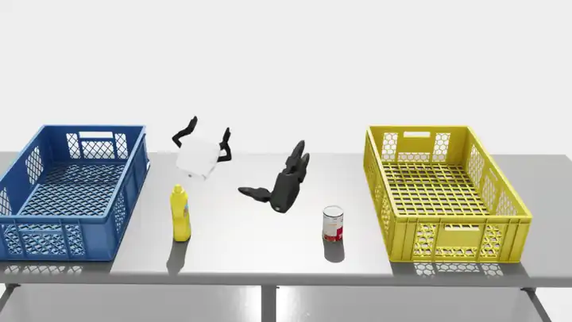 |
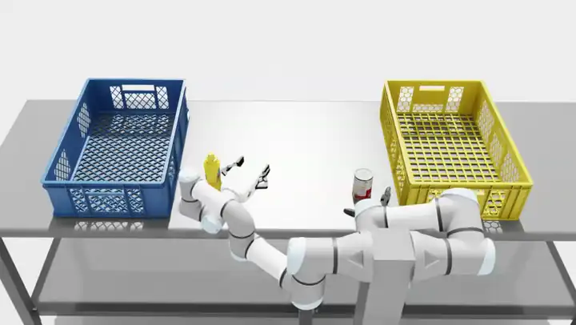 |
This tutorial covers the isaacsim.replicator.teleop and isaacsim.replicator.teleop.ui extensions. The runtime drives robot arms, grippers, floating end effectors, and mobile bases from VR controllers. The UI exposes that runtime as a Teleop window with six collapsible panels. The isaacsim.replicator.episode_recorder extension handles recording, replay, and offline synthetic data generation.
Learning objectives#
After completing this tutorial, you will be able to:
Connect Isaac Sim to a CloudXR-capable VR headset through the Isaac Teleop runtime.
Configure the Floating, IK, Grasp, and Locomotion controllers from the Teleop window.
Operate a robot from VR controllers, or from on-screen markers and sliders in debug mode.
Save and reload complete teleop setups as YAML profiles.
Record teleop episodes to HDF5 with the Episode Recorder.
Replay recorded episodes through Replicator writers to generate synthetic datasets.
Getting started#
Prerequisites#
Isaac Sim built and launchable.
Isaac Teleop installed from PyPI:
python -m pip install "isaacteleop[cloudxr,retargeters]~=1.0.0"
A CloudXR-compatible VR headset on the same network as the host machine. Controller button mappings in this tutorial target the Meta Quest 3; other headsets may surface different button semantics through the same OpenXR actions.
A stage with a robot. Use one of the built-in scenario stages (for example
teleop_scenario_floating_xarm_dex3.usd) while learning the workflow.
Note
Debug mode replaces VR input with draggable USD markers and on-screen sliders. It does not require a headset, CloudXR, or the Isaac Teleop package. Skip the CloudXR steps below if you only plan to use debug mode. See Operate without VR (debug mode).
Start CloudXR and connect the headset#
Start the Isaac Teleop CloudXR runtime in a separate terminal and keep it running for the whole teleop session:
python -m isaacteleop.cloudxr
Open the Isaac Teleop Web Client from the headset browser and follow the displayed connection steps to pair the headset. With CloudXR running and the headset connected, you complete the rest of the workflow in Isaac Sim — launching the app, opening the Teleop window, and clicking Connect — without returning to the web client.
Running modes#
The teleop runtime works in two Isaac Sim launch configurations. Both load the Teleop UI and support every controller described in this tutorial.
2D monitor (controller tracking only) — The desktop viewport renders the scene on a flat screen. The headset and controllers feed pose tracking to the runtime over CloudXR but do not stereo-render the scene. This is the default mode and requires no special app:
./isaac-sim.sh
VR headset (stereo rendering) — Launches the XR VR experience app (
isaacsim.exp.base.xr.vr.kit). The headset receives a stereo-rendered viewport for a first-person 3D view and exposes an in-headset Play / Stop UI equivalent to the desktop timeline buttons. The desktop window stays available for UI interaction:./isaac-sim.xr.vr.sh
Open the Teleop window#
The extensions are loaded automatically. Open the Teleop window from Tools > Replicator > Teleop:
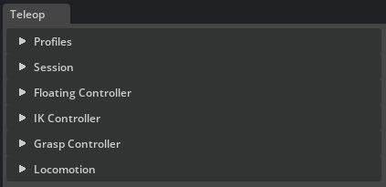
With the CloudXR runtime running and the headset connected, click Connect in the Session panel to start the teleop session.
Quick start#
Pair one of the built-in scenario stages with its matching profile, connect, and press Play. The profile resolves every controller against the stage, so no manual setup is needed.
Open one of the built-in scenario stages, for example
teleop_scenario_floating_xarm_dex3.usd.In the Teleop window’s Profiles panel, select the matching profile (
floating_xarm_dex3.yaml) and click Load. Every controller resolves against the stage and its Enable button activates.Expand Session and click Connect. Without a headset, expand Session > Debug and check Debug Tracking instead.
Press Play on the timeline.
Move the VR controllers (or drag the on-screen markers in debug mode) to operate the robot.
A profile enables only the controllers its scenario needs:
Floating Controller — tracks a free rigid-body gripper or end effector to the VR controller pose.
IK Controller — drives an articulated arm through inverse kinematics so its end effector tracks the VR controller.
Grasp Controller — maps the VR trigger to gripper open and close.
Locomotion — moves the robot base or the VR origin from the thumbsticks.
For example, floating_xarm_dex3.yaml enables the Floating, Grasp, and Locomotion controllers; the IK profiles enable IK instead of Floating. See the workflow walkthrough for the detailed, step-by-step version, including recording and replay.
Overview#
The extension is split into two layers:
isaacsim.replicator.teleop— runtime that handles VR input, frame markers, and the four controllers (Floating, IK, Grasp, Locomotion), all managed byTeleopManager.isaacsim.replicator.teleop.ui— the Teleop window with six collapsible panels: Profiles, Session, Floating Controller, IK Controller, Grasp Controller, and Locomotion.
Every controller follows the same three-step lifecycle:
Apply validates the prim path and prepares the controller resources.
Enable arms the controller for the next Play.
Clear tears down the resources but keeps the prim path for quick reconfiguration.
Controllers are only active while the timeline is playing and deactivate automatically on Stop. Gains, rotation offsets, and speed sliders are live-editable during Play and persist across sessions. The complete state of every panel can be saved to a YAML profile from the Profiles panel.
The Episode Recorder window handles recording and replay. While a TeleopManager is alive, sessions opened from that window automatically capture teleop controller, aim-pose, and head-pose channels in addition to the articulation, rigid-body, and Xform channels selected in the UI. The recorded HDF5 files feed the offline synthetic-data pipeline. For scripted workflows, build_teleop_recorder returns an equivalent recorder preconfigured with both teleop and scene recordables.
UI window overview#
The Teleop window contains six collapsible panels, described below from top to bottom. The separate Episode Recorder window handles recording and replay; see Record and replay.
Profiles#
The Profiles panel saves and restores the complete state of every other panel as a single YAML file.
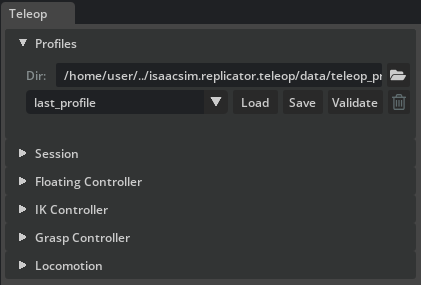
Dir — working directory for teleop profile files. Defaults to the built-in profiles shipped with the extension. Click the folder icon to browse for a custom directory.
Profile dropdown — lists all
.yamlfiles found in the working directory.Load — reads the selected profile and applies it to all panels. If the stage contains the referenced prims, controllers are resolved immediately; otherwise the UI fields are populated and unresolved paths are reported.
Save — opens an inline Name field and Confirm button. Enter a filename (without
.yaml) and click Confirm to write the current panel state to disk. If a file with that name already exists, an Overwrite profile dialog asks for confirmation; click Overwrite to replace it or Cancel to keep the existing file.Validate — checks all panel settings against the current stage and reports error and warning counts in the status line. Detailed issues are printed to the console.
Delete (trash icon) — permanently removes the selected profile file from disk.
Session#
The Session panel manages the VR connection, frame markers, the XR Anchor (custom-anchor prim plus headset offset and rotation), and the debug controls.
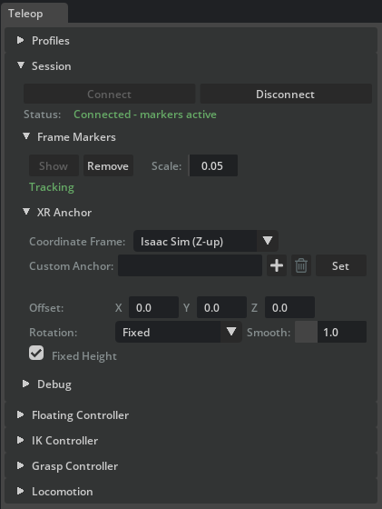
Connection#
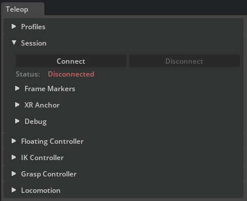
Connect / Disconnect — establishes or tears down the OpenXR connection to the Isaac Teleop CloudXR session.
Status — displays the current connection state: red (Disconnected), green (Connected - markers active), or yellow (intermediate states such as No data).
Frame Markers#
The Frame Markers sub-section shows the live VR poses as four frame-axis prims under /Teleop/Markers/TrackingOrigin — the origin, Left, Right, and Head. Markers are created automatically on Connect and on enabling Debug Tracking; you can also create or remove them manually here.
Show — creates the four frame-axis markers and begins streaming VR poses to them.
Remove — deletes the markers and stops tracking.
Scale — adjusts the visual axis length of every marker.
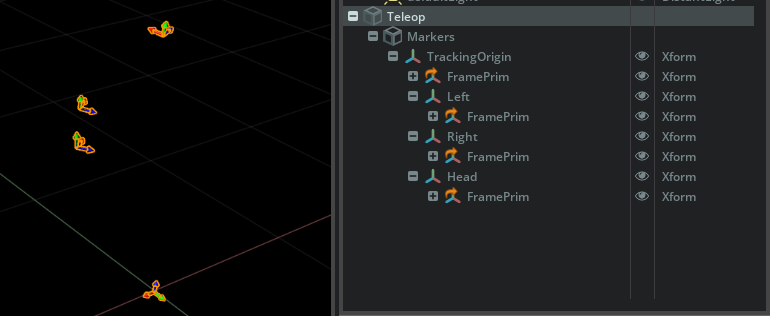
XR Anchor#
The XR Anchor sub-panel groups every control that determines where the VR headset and controllers appear in the scene: the prim the anchor follows (Custom Anchor), the per-pose Coordinate Frame conversion, and the headset offset, rotation, and fixed-height controls applied on top of that anchor. The naming mirrors Kit’s VR Profile menu, where the same concept is exposed under Navigation Settings > Physical World USD Anchor > Custom USD Anchor.
Coordinate Frame — selects how incoming VR poses are converted:
Isaac Sim (Z-up) — applies a Y-up to Z-up rotation so poses match the Isaac Sim stage convention (default).
Raw (no conversion) — passes poses through unchanged.
Custom Anchor — scene prim that the VR headset and controllers are anchored to. Click Set to validate the path and start live every-frame following of the prim’s world transform. After a custom path is active, the same row button changes to Clear. Clear reverts the active anchor to the built-in origin marker under
/Teleop/Markers/and resets the marker to world (0, 0, 0); the typed path is preserved in the field. To retarget the active anchor, click Clear, edit the path if needed, and click Set again. Use the bin glyph in the row to clear the field text. Paths under the reserved/Teleop/Markers/namespace fall back to the built-in origin on Set.Offset — position offset in metres for the VR headset camera (one row with X, Y, and Z fields). Without a Custom Anchor this is an absolute world position; with one, it is relative to that prim.
Rotation — how the headset camera yaw tracks the Custom Anchor prim:
Fixed — ignore prim rotation entirely.
Follow Prim — yaw tracks the prim (roll and pitch are stripped).
Follow (Smoothed) — same as Follow Prim with slerp damping.
Smooth — slerp time constant in seconds, used only in Smoothed mode. Lower values give snappier tracking; higher values are smoother.
Fixed Height — locks the headset camera Z to its initial value, preventing vertical bobbing when the Custom Anchor prim moves up or down.
Note
The teleop extension owns Kit’s XR profile anchor (set under VR Profile > Navigation Settings > Physical World USD Anchor) for the duration of a session. On Connect it switches Kit to custom anchor mode pointing at /World/XRAnchor and drives that prim every frame from the Custom Anchor prim plus the offset, rotation, smoothing, and coordinate-frame controls above. To retarget an active custom anchor, clear it first and then set the new path. Kit’s profile-level Adjust for User Height setting (under Navigation Settings) is unrelated — it shifts the camera at scene-entry time, while Fixed Height here locks Z to its first-frame value during the teleop session.
Debug#
Debug mode replaces VR controller input with draggable USD markers and on-screen sliders, so every controller can be exercised without VR hardware. See debug mode for the step-by-step walkthrough.

{kind=link}
{kind=link}
{kind=link}
{kind=link}
{kind=link}
{kind=link}
Write Backend — overrides the global
XformPrimbackend used for all teleop writes. Options: USD (plain attribute writes), USD-RT (Fabric hierarchy), Fabric (fastest path, requires Fabric Scene Delegate).Debug Tracking checkbox — enables synthetic pose input. Mutually exclusive with a live VR connection: disconnect first, or disable debug tracking before connecting.
L Grasp / R Grasp — sliders (0–1) that simulate the VR trigger squeeze. Feed directly into the Grasp Controller as
trigger_value.Slide X / Slide Y — sliders (-1 to 1) that simulate the left thumbstick for Locomotion lateral and forward/backward slide.
Turn — slider (-1 to 1) that simulates the right thumbstick for Locomotion yaw.
Up / Down — hold-buttons that simulate the right-side face buttons for vertical motion.
Carry Origin — hold-button that simulates the left primary face button. Press and hold to assert the input; release to clear it. The Locomotion controller toggles Carry Tracking Space on the rising edge.
Floating Controller#
{kind=link}
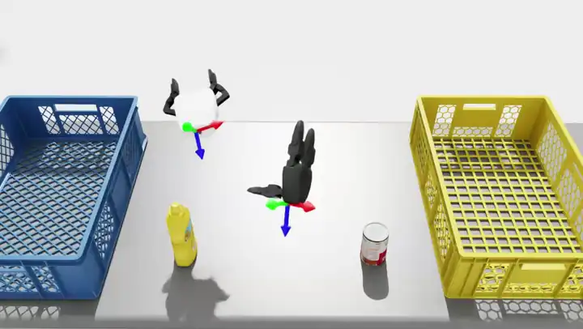
The Floating Controller drives a free rigid body so that it tracks the VR controller pose using velocity-based PD control. Use it for end effectors or grippers that are not part of an articulation chain. Each side (Left / Right) has its own collapsible sub-panel.
{kind=link}
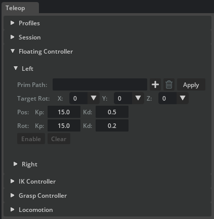
The target prim must be a rigid body. To control an articulated gripper with the Floating Controller, attach the articulation root joint to a rigid body and point the Floating Controller at that rigid body. The gripper articulation is then carried along as a child, while the Grasp Controller independently drives its finger joints.
Prim Path — the rigid body prim to drive. Click the + button to pick the prim from the viewport, or paste the path. Click Apply to validate. The path field, + button, and trash button are locked once configured; click Clear to reconfigure.
Target Rot (one row with X, Y, and Z combos) — per-axis local rotation offset in 90-degree increments (-180, -90, 0, +90, +180). Different grippers and end effectors have different local-frame conventions; these offsets align the controlled body so that its forward axis matches the VR controller pointing direction. For example, a gripper whose local Z points sideways instead of forward can be corrected with a 90-degree Y offset. Adjustable during Play and saved in teleop profiles.
Pos Kp / Kd — position proportional and derivative gains. Higher Kp makes the body snap to the target faster; Kd damps oscillations.
Rot Kp / Kd — orientation proportional and derivative gains. Same principle as position gains, applied to rotational tracking.
Enable / Disable — arms or disarms the controller for the next Play. Status transitions: Configured → Standby → Active (on Play).
Clear — destroys the controller resources while keeping the prim path.
IK Controller#
{kind=link}
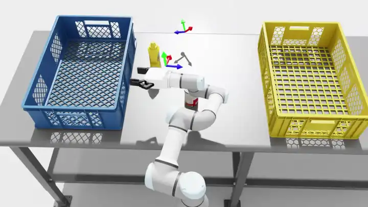
The IK Controller drives an articulated robot arm through inverse kinematics so that its end effector tracks the VR controller pose. Each side (Left / Right) has its own collapsible sub-panel.
{kind=link}
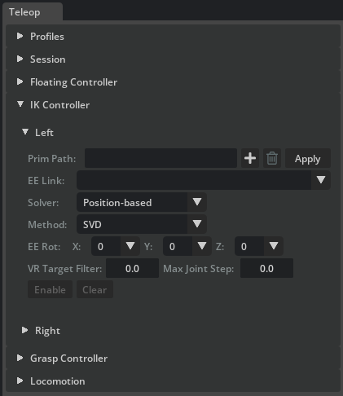
The target prim must be an articulation. The IK solver operates on the joint chain from the articulation root down to the selected end-effector link. For a typical setup — for example a UR3e arm with a gripper attached — select the wrist link as the end effector so that IK solves only for the arm joints. The gripper joints are then driven separately by the Grasp Controller.
Articulation and end effector#
Prim Path — the articulation root prim. Click Apply to validate. On success the EE Link dropdown is populated with all body links in the kinematic chain.
EE Link — selects which link in the chain is the IK target. Choose the last arm link (for example the wrist) to exclude gripper joints from the IK solve. The last link in the chain is selected by default.
Clear — destroys the solver and articulation resources; the prim path is preserved for quick reconfiguration.
Solver selection#
Solver dropdown — chooses the IK backend. Each solver can be hot-swapped during Play without stopping the timeline:
Solver
Description
Position-based
Single-step Jacobian differential IK. Supports a configurable Method dropdown.
Velocity-based
Velocity-space IK with a proportional Gain slider that controls tracking aggressiveness. Also supports a Method dropdown.
Levenberg-Marquardt
Multi-iteration damped least-squares per frame. No method or gain controls.
PINK
Task-based QP IK using a Pinocchio backend with joint-limit enforcement and posture regularisation. Exposes additional tuning described below.
Method dropdown — visible only for Position-based and Velocity-based solvers. Selects the Jacobian inversion strategy:
Damped LS — most stable default; handles singularities well.
Pseudoinverse — direct tracking when well-conditioned; less stable near singularities.
Transpose — cheapest update; can be gain-sensitive.
SVD — robust singular-value filtering; typically the heaviest compute.
Rotation offset and tuning#
EE Rot (one row with X, Y, and Z combos) — per-axis local rotation offset in 90-degree increments (-180, -90, 0, +90, +180). Same purpose as Target Rot for the Floating Controller: align the IK target so the robot’s tool tip or gripper faces the same direction as the VR controller. Adjustable at runtime and saved in profiles.
VR Target Filter — exponential moving average (EMA) low-pass filter on the incoming VR target pose. Range 0.0–0.95. Higher values reduce jitter but add delay. Default 0.0 (no filtering).
Max Joint Step — safety clamp on the maximum joint-angle change per simulation step (radians). Prevents sudden joint jumps without acting as a true velocity limit. Default 0.0 (disabled).
Gain — (Velocity-based solver only) proportional gain controlling how aggressively the end effector tracks the VR target. Values of 1–5 give smooth conservative tracking; 10–20 are fast; above 30 may oscillate.
PINK-specific tuning#
These controls appear only when the PINK solver is selected:
Task Gain — PINK
FrameTaskresponse gain. Higher values make tracking more aggressive; lower values soften it.Posture — posture regularisation cost. Higher values keep the arm closer to its current pose; lower values give the end-effector task more freedom.
QP dropdown — quadratic-program solver backend. Use to compare solve quality and performance across backends.
LM Damp —
FrameTaskLevenberg-Marquardt damping. Higher values improve stability in difficult configurations but slow response.
Enable and status#
Enable / Disable — arms or disarms the IK controller for the next Play. During Play the status shows Active when the target is reachable and Out of reach when the VR target leaves the arm’s workspace. Tracking resumes automatically when the target returns to a reachable pose.
Grasp Controller#
{kind=link}
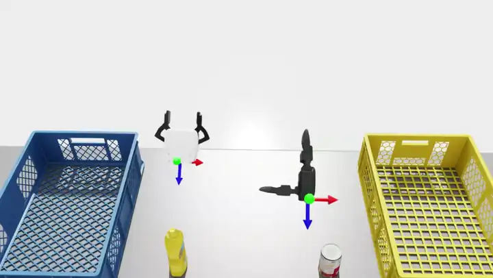
The Grasp Controller maps the VR trigger’s analog value (0 = open, 1 = fully closed) to gripper joint drive targets. Grippers vary widely — a parallel-jaw gripper has a single drive joint, while a multi-finger hand can have a dozen joints across several fingers — so the controller relies on a YAML config file that defines the mapping from the linear 0–1 trigger value to each joint’s target position. Each side (Left / Right) has its own collapsible sub-panel with independent configuration.
{kind=link}
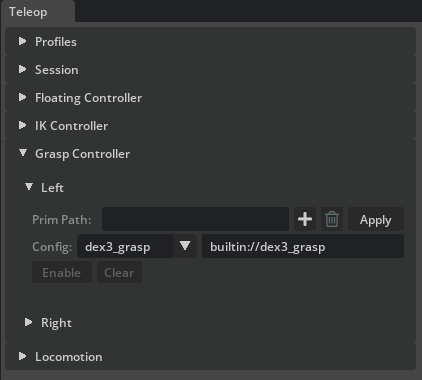
Prim Path — the gripper articulation prim. Click Apply to validate the path and load the currently selected config in one step. The field is locked after configuration; click Clear to reconfigure.
Config dropdown — selects a built-in grasp configuration shipped with the extension. Selecting an entry immediately updates the path field next to it and resets the side to
Config changed - click Apply, so Apply must be clicked again before Enable becomes available.Config path field (the editable text field next to Config) — full path or
builtin://URI to a grasp config YAML. Type a custom path here to use your own config file for a custom gripper or grasp style. Editing this field also requires another Apply click.Enable / Disable — arms or disarms trigger tracking for this side.
Clear — destroys grasp resources while keeping the paths for quick reconfiguration.
During Play, trigger pressure is read from the VR controller or from the L Grasp / R Grasp debug sliders. For each joint listed in the config, the controller interpolates linearly between the open and closed target values based on the current trigger value.
Config file format#
Each config file lists the joints to drive, the input range, and the corresponding target range in degrees. Author custom config files to support your own grippers or to define alternative grasp styles on the same hand — for example, a pinch grasp vs. a full-palm grasp on a five-finger hand.
Simple gripper — xarm_grasp.yaml maps a single drive joint:
joints:
- name: "drive_joint"
input_range: [0.0, 1.0]
target_range: [0.0, 48.0]
Multi-finger hand — dex3_grasp.yaml maps seven joints across three fingers, each with its own target range:
joints:
- name: "right_hand_index_0_joint"
input_range: [0.0, 1.0]
target_range: [0.0, 90.0]
- name: "right_hand_index_1_joint"
input_range: [0.0, 1.0]
target_range: [0.0, 80.0]
- name: "right_hand_middle_0_joint"
input_range: [0.0, 1.0]
target_range: [0.0, 90.0]
- name: "right_hand_middle_1_joint"
input_range: [0.0, 1.0]
target_range: [0.0, 80.0]
- name: "right_hand_thumb_0_joint"
input_range: [0.0, 1.0]
target_range: [0.0, 0.0]
- name: "right_hand_thumb_1_joint"
input_range: [0.0, 1.0]
target_range: [0.0, -60.0]
- name: "right_hand_thumb_2_joint"
input_range: [0.0, 1.0]
target_range: [0.0, -60.0]
Locomotion#
{kind=link}
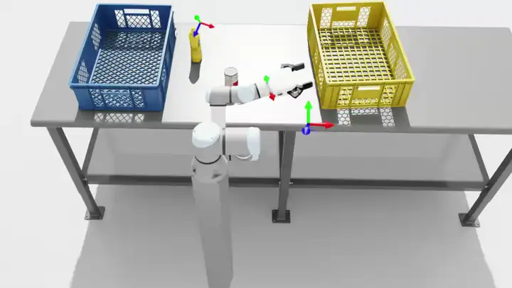
The Locomotion controller moves a prim kinematically using VR thumbstick and face-button input. Horizontal movement is projected onto the world ground plane using the prim’s heading, so axes remain correct regardless of the target prim’s local-frame orientation.
{kind=link}
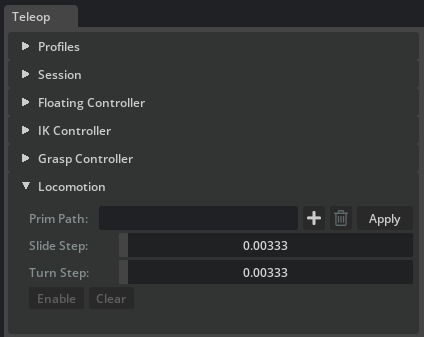
Two workflows are supported:
Robot base — set the prim path to a robot base link. Thumbstick input moves the robot, and attached arms and grippers follow. Toggle Carry Tracking Space (left primary button) to co-move the VR origin with the robot.
VR origin — set the prim path to the built-in tracking-space origin marker (
/Teleop/Markers/TrackingOrigin). Carry is implicit because the locomotion prim is the VR origin. Use this for floating grippers that have no physical base.
Controls:
Prim Path — the prim to move. Click Apply to validate.
Slide Step — slide distance per app update at full input. Drives left-thumbstick translation (forward, backward, lateral) and the right face-button vertical motion.
Turn Step — turn angle per app update at full right-thumbstick yaw input.
Enable / Disable — arms or disarms locomotion for the next Play.
Clear — destroys the configured state while keeping the prim path.
During Play the controller reads the following VR inputs:
Left thumbstick — forward/backward (Y) and left/right (X) slide in the world ground plane.
Right thumbstick — left/right yaw turn.
Right face buttons —
A(primary) moves down,B(secondary) moves up along world Z (Meta-style controller layout).Left primary face button (
Xon Meta-style controllers) — toggles Carry Tracking Space mode. When active, locomotion also moves the Tracking Space prim with the base, including turn rotation around the base pivot. When the locomotion prim is the tracking-space origin, carry is implicit and the toggle has no additional effect.
Record and replay (Episode Recorder)#
The Episode Recorder window (isaacsim.replicator.episode_recorder.ui, opened from Tools > Replicator > Episode Recorder) records per-physics-step simulation state to multi-episode HDF5 files and replays them through the Kit timeline. It works on any stage. When a TeleopManager is alive, teleop controller, aim-pose, and head-pose channels are appended to every session opened from the window via install_teleop_session_injector.
{kind=link}
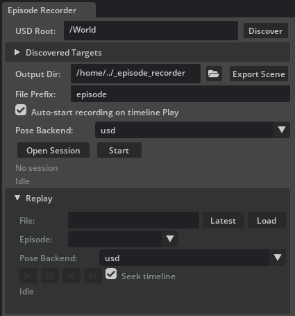
A recording session is one HDF5 file that contains many episodes. Episodes auto-start on timeline Play and auto-end on timeline Stop. The window buttons, the VR recording button, and any scripted caller add a manual start, end, or toggle edge on top of that, all driving the same underlying session.
Targets and output#
USD Root — prim path scanned by the discovery helpers.
/Worldis a sensible default.Discover — lists every articulation (via
ArticulationRootAPI), rigid body (viaRigidBodyAPI), and plain Xform prim under the root. Plain Xforms are always included, so a locomotion-driven robot-base cube, a hand-placed tracker, or a visual tool tip under an articulation show up without extra opt-in.Discovered Targets (collapsible, scrollable) — the articulations and prims found under the root. Tick the boxes for every target you want recorded; each tick maps to a group or dataset inside the HDF5 file.
Output Dir — directory where the HDF5 file is written. Defaults to
<cwd>/_episode_recorder; created if missing.Export Scene (next to the Output Dir field) — writes a flattened USD of the current stage as
<output_dir>/stage_snapshot.usdtogether withstage_snapshot.sidecar.json. The snapshot is scene-level, so one click per scene is enough: subsequent Open Session calls detect the file and stamp its basename into the HDF5stage_snapshotattribute automatically.File Prefix — filename prefix. The final path is
{prefix}_{timestamp}.hdf5.Auto-start recording on timeline Play — when checked (default), pressing Play automatically starts a new episode. Uncheck it to record only when Start / End (or the VR button) is pressed; the timeline can play without any episode being captured.
Pose Backend (record side) — selects the backend used by the recorder’s per-tick batch
XformPrim.get_world_poses()read. Options: usd (default; pure USD reads), usdrt (Fabric Scene Delegate viaIFabricHierarchy), fabric (Fabric Scene Delegate direct). The Fabric-backed options are safe speedups when Fabric Scene Delegate is enabled and fall back tousdwith a carb warning when it is disabled. Distinct from the Write Backend in the Teleop Session > Debug panel, which controls the teleop write path.
Session and episode control#
Open Session / Close Session — single toggle button. On open, the recorder creates the HDF5 file, subscribes to simulation events, and the filename appears below. All configuration options are locked while a session is open.
Start / End — single toggle button that manually starts or ends an episode inside the open session. Only enabled while a session is open. Also driven by the VR left-Y button (see below) and, when Auto-start recording on timeline Play is enabled, by the timeline PLAY / STOP hooks.
Binding badge — small dotted label rendered next to Start / End. Lights up green and lists every external input (for example a
VRRecordingButtonattached byTeleopManager) currently wired to this recorder. The tooltip enumerates each binding’s label and the command it dispatches (start/end/toggle). Empty when no external bindings are active.Status label — colour-coded feedback below the buttons:
Idle (dim).
Session open - N articulation(s), M prim(s) (yellow).
Recording episode #K (green).
Standby - K episode(s) captured (yellow).
Session closed (K episode(s)) (green).
Errors and warnings are shown in red and yellow.
Replay#
The Replay sub-section (collapsible, collapsed by default) plays any previously recorded HDF5 back through the Kit timeline. Replay is mutually exclusive with recording: while a session is open the Replay controls are locked, and while replay is attached the recording controls are locked.
The transport row uses Kit timeline-style glyph buttons rather than text labels: play / stop, pause, step-backward, and step-forward.
File — full path to an HDF5 session file. Use Latest to fill in the newest
{prefix}_*.hdf5in the current Output Dir.Load — opens the HDF5 and populates the Episode dropdown with every episode name and its frame count. The info label next to the dropdown shows
success=True/Falsefor the selected episode, so abandoned takes are visible at a glance. After load, a red warning row appears below the status if any prim paths referenced by the HDF5 do not resolve on the current stage — open the matching scene (or the exportedstage_snapshot.usd) before starting the replay.Pose Backend (replay side) — selects the backend used by the replayer’s per-tier batch pose write. Options match the record-side selector (usd / usdrt / fabric).
usdis the recommended default — the ancestry-ordered tier split plus USD writes is what avoids parent-lag stutter on articulations nested under moving xforms.usdrtandfabricare reserved for benchmarking flat scenes and may exhibit a one-frame parent-lag on nested hierarchies. Applied on Load.Play / Stop glyph — drives
EpisodeReplayer.start_replay. Each Kit app update applies one recorded frame and seeks (never plays) the Kit timeline to the recordedsim_time, so any stage-authored USD animations play back in lockstep without stepping physics. Pose writes land in an anonymous USD sublayer so the root stage is never mutated. Stopping (or reaching the last frame in non-loop mode) pops that sublayer, returning every prim to its pre-replay pose; the HDF5 session stays loaded so a fresh replay can be started immediately.Pause glyph — pauses the replay on the current frame; the last applied frame stays on the stage. Pressing it again resumes from where it left off. The Stop glyph still pops the anonymous sublayer.
Step Backward / Step Forward glyphs — apply the previous or next recorded frame and auto-pause the replay. Use them to inspect the recording one frame at a time or to seek to a specific moment before resuming.
Seek timeline — when checked (default), each applied frame also seeks the Kit timeline to that frame’s recorded
sim_timeso stage-authored USD animations stay in sync with the recording. Uncheck it to replay only the recorded prim poses and leave the timeline untouched.Progress label — below the replay status, shows the currently applied frame as
Frame X / N. The same counter is emitted to the terminal at one-second intervals and on the first and last frame.
Replay is pure-USD and timeline-seeking only — the replayer never plays the timeline and never calls into the physics engine. Teleop controllers (Floating, IK, Grasp, Locomotion) stay dormant during replay, which avoids the Simulation view object is invalidated errors that playing the timeline against a stopped simulation would otherwise trigger. The start / stop lifecycle emits [EpisodeRecorder][UI] Replay: starting (episode ..., N frames, file=...) and Replay: stopped (reason=user | finished | stage_closed) on the terminal, plus a periodic Replay: frame X/N progress line.
For replay to work, every prim path recorded in the HDF5 must exist on the loaded stage. The Replay panel uses a lenient replayer (ReplayPolicy(strictness="best_effort")) that skips missing paths with a warning rather than erroring. To guarantee a reproducible setup, click Export Scene once before recording; the resulting stage_snapshot.usd can be opened on any machine to reproduce the authored stage before replaying.
HDF5 file layout#
Each session produces one HDF5 file with one group per episode. Datasets are preallocated per episode and trimmed to their true length on end_episode.
<file>.hdf5 # one file per open_session()
├── @schema_version, @created_at, manifest/, ... # file-level attrs + manifest
├── @stage_snapshot # optional, set by Export Scene
└── episodes/
├── episode_00000/ # @episode_index, @started_at, @ended_at,
│ │ # @num_frames, @success (optional),
│ │ # @user_metadata (optional, JSON)
│ ├── meta/time/
│ │ ├── sim_time (N,) float64
│ │ ├── physics_step (N,) int64
│ │ └── wall_time (N,) float64
│ ├── state/<name>/ # articulation, xform, or rigid body (UI naming)
│ │ ├── positions (N, L, 3) float32 # articulation: per-link world position
│ │ ├── orientations (N, L, 4) float32 # articulation: per-link wxyz
│ │ ├── position (N, 3) float32 # xform / rigid body
│ │ └── orientation (N, 4) float32 # wxyz
│ └── teleop/ # present when a live TeleopManager is active
│ ├── <side>/{trigger, squeeze, thumbstick_x, thumbstick_y} (N,) float32
│ ├── <side>/{primary_click, secondary_click, thumbstick_click} (N,) uint8
│ ├── <side>/aim_position (N, 3) float32 # record_aim_pose=True
│ ├── <side>/aim_orientation (N, 4) float32 # wxyz
│ └── head/{position, orientation} (N, 3 | 4) float32 # record_head_pose=True
├── episode_00001/ ...
└── episode_00002/ ...
For articulations, L is the number of recorded links (the articulation root plus every UsdGeom.Xformable descendant). The link list is frozen on Open Session and stored in the manifest so the replayer binds to the same prim set. There are no DOF, velocity, or drive-target channels: every gripper-drive joint is reproduced through its child link’s recorded world pose, so replaying open / closed grippers works without running any teleop logic.
EpisodeReplayer.list_episodes iterates the episodes/episode_NNNNN groups for per-episode playback.
Recorded data vs. replayed data#
The recorder captures two kinds of data per frame:
World state (under
state/<name>/, one HDF5 group per recorded articulation, Xform, or rigid body) — the world pose of every recorded prim. For articulations, this is the per-link pose array; for rigid bodies and Xforms, the single root pose. This is the only data the replayer applies.Teleop input channels (under
teleop/<side>/..., present only when a liveTeleopManageris active at record time) — trigger, squeeze, thumbstick, button clicks, and optional OpenXR aim-pose and head-pose channels. Recorded for offline analysis, policy learning, and re-simulation; the replayer ignores them entirely.
Aim-pose and head-pose capture is controlled by the carb settings /persistent/exts/isaacsim.replicator.teleop/record/record_aim_pose and .../record_head_pose (both default True). Toggle them from the Script Editor (carb.settings.get_settings().set_bool(...)) before opening a session if you want to skip them.
On replay, EpisodeReplayer.apply_frame writes the recorded world pose of every prim (and every articulation link) into an anonymous USD sublayer through XformPrim.set_world_poses. No physics is stepped, no DOFs are written, no IK is solved, no trigger command is re-dispatched, no OpenXR input is consumed. The teleop controllers (Floating, IK, Grasp, Locomotion) stay dormant. Replay is strictly a USD-pose playback.
Programmatic recordables (cameras, attributes)#
The Episode Recorder window only auto-discovers articulations, rigid bodies, and plain Xforms under the USD Root. To capture additional channels — typically camera trajectories for the synthetic-data pipeline or arbitrary USD attributes for offline analysis — build the recorder programmatically and add the extra recordables before opening the session:
from isaacsim.replicator.episode_recorder import (
CameraRecordable,
AttributeRecordable,
)
from isaacsim.replicator.teleop import build_teleop_recorder
recorder = build_teleop_recorder(
output_dir="/tmp/demos",
teleop_manager=teleop_manager,
articulations={"robot": "/World/teleop/robot"},
)
recorder.add(CameraRecordable(
group="cameras/wrist",
prim_path="/World/teleop/robot/.../wrist_cam",
))
recorder.add(AttributeRecordable(
group="env/light_intensity",
prim_path="/World/Lights/key_light",
attribute_name="intensity",
))
recorder.open_session()
CameraRecordable captures the camera’s world pose plus its USD intrinsics (focal length, horizontal and vertical aperture, clipping range) every frame; resolution is stored once in the session manifest. On replay the same channel re-authors the recorded camera trajectory into the anonymous sublayer, so any Replicator render product attached to the camera prim picks it up without extra wiring.
AttributeRecordable captures a single USD attribute on a prim per frame. Use it for environment state that is not a pose (light intensity, material parameter, custom authored attributes, and so on).
Third-party extensions can also add channels to every session opened from the UI window by registering a session injector with register_session_injector — this is the same mechanism install_teleop_session_injector uses to contribute teleop controller, aim-pose, and head-pose channels.
Teleop profiles#
A teleop profile is a single YAML file that captures the complete state of every panel in the Teleop window. Use the Profiles panel at the top of the Teleop window to save, load, and delete profiles. Built-in profiles ship with the extension under source/extensions/isaacsim.replicator.teleop/data/teleop_profiles/; point the Dir field at a custom folder to manage your own profiles alongside the built-in ones.
When loaded, a profile applies every section in order: session globals first, then each controller panel. If the referenced prims exist on the current stage, the controllers resolve and are ready to Enable immediately. If the stage does not match (different robot or missing prims), the UI fields are still populated and the unresolved paths are reported in the status line.
Built-in profiles#
The extension ships four built-in profiles that pair each locomotion workflow (VR-origin or robot-base) with a solo and a bimanual robot configuration:
Profile |
Matching stage |
Configuration |
|---|---|---|
|
|
Solo floating xArm gripper (right side); VR-origin locomotion. |
|
|
Bimanual floating grippers (xArm left + Dex3 right); VR-origin locomotion. |
|
|
Single UR3e arm with xArm gripper (right side); robot-base locomotion. |
|
|
Bimanual UR3e arms (xArm gripper left + Dex3 right); robot-base locomotion. |
The two bimanual profiles are described in detail below; the solo variants share the same structure with one side disabled and the locomotion target adjusted for the simpler robot.
Bimanual floating grippers (VR origin locomotion)#
floating_xarm_dex3.yaml configures a dual floating-gripper setup. The Floating Controller drives each gripper as a free rigid body, and Locomotion targets the VR origin marker so that thumbstick input repositions the entire VR workspace.
Session — global settings that apply before any controller is configured:
session:
coordinate_system: isaac_sim # Z-up coordinate conversion
tracking_space_enabled: false
tracking_space_path: '' # empty = built-in origin marker
marker_scale: 0.05
anchor_x: 0.0
anchor_y: 0.0
anchor_z: 0.0
anchor_rotation_mode: fixed
anchor_smoothing: 1.0
anchor_fixed_height: true
Floating — per-side rigid-body controller with PD gains and rotation offsets. Both sides are enabled, each pointing at a different gripper root prim:
floating:
left:
enabled: true
settings:
prim_path: /World/teleop_xarm_dex3/.../xarm_gripper_rigid_root
pos_kp: 20.0
pos_kd: 0.5
orient_kp: 20.0
orient_kd: 0.2
target_rot_x_deg: 180
target_rot_y_deg: 0
target_rot_z_deg: 90
right:
enabled: true
settings:
prim_path: /World/teleop_xarm_dex3/.../dex3_1_r_rigid_root
pos_kp: 20.0
pos_kd: 0.5
orient_kp: 20.0
orient_kd: 0.2
target_rot_x_deg: -90
target_rot_y_deg: 0
target_rot_z_deg: 90
IK — neither side is enabled because the grippers are floating rigid bodies rather than articulations. The section is still present with defaults so that loading the profile resets any prior IK configuration.
Grasp — maps each side to a gripper articulation prim and a built-in grasp config. builtin:// paths resolve to YAML files shipped with the extension:
grasp:
left:
enabled: true
prim_path: /World/teleop_xarm_dex3/.../xarm_gripper
config_path: builtin://xarm_grasp
right:
enabled: true
prim_path: /World/teleop_xarm_dex3/.../dex3_1_r
config_path: builtin://dex3_grasp
Locomotion — drives the built-in tracking-space origin so that thumbstick input moves the entire teleop workspace (VR-origin workflow):
locomotion:
enabled: true
settings:
prim_path: /Teleop/Markers/TrackingOrigin
linear_step: 0.003333333333333333
angular_step: 0.003333333333333333
Dual-arm IK (robot-base locomotion)#
ik_dual_ur3_xarm_dex3.yaml configures a dual UR3e arm setup where each arm is driven by the PINK IK solver. Locomotion targets the robot’s root prim so that thumbstick input moves the entire robot base.
IK — both sides are enabled with the PINK solver. Each side points at a different UR3e arm within the dual-arm assembly. The ee_rot_* offsets align each end effector’s local frame with the VR controller pointing direction. The PINK solver does not use a Jacobian-inversion method; for the Position-based and Velocity-based solvers, add method: damped-least-squares | pseudoinverse | transpose | singular-value-decomposition to the side’s settings.
ik:
left:
enabled: true
settings:
robot_path: /World/teleop_dual_ur3_xarm_dex3/dual_arm/left_arm_ur3e_xarm/ur3e
ee_link: wrist_3_link
solver: pink
gain: 5.0
vr_target_filter: 0.0
max_joint_step: 0.0
pink_qp_solver: osqp
pink_task_gain: 0.5
pink_posture_cost: 0.001
pink_lm_damping: 1.0
ee_rot_x_deg: 180
ee_rot_y_deg: 0
ee_rot_z_deg: 90
right:
enabled: true
settings:
robot_path: /World/teleop_dual_ur3_xarm_dex3/dual_arm/right_arm_ur3e_dex3/ur3e
ee_link: wrist_3_link
solver: pink
gain: 5.0
vr_target_filter: 0.0
max_joint_step: 0.0
pink_qp_solver: daqp
pink_task_gain: 0.5
pink_posture_cost: 0.001
pink_lm_damping: 1.0
ee_rot_x_deg: 180
ee_rot_y_deg: 0
ee_rot_z_deg: -180
Floating — disabled because the arms are articulations controlled by IK.
Grasp — same gripper mapping as the floating profile, with each side pointing at the corresponding gripper articulation.
Locomotion — drives the robot root prim so that thumbstick input moves the dual-arm assembly as a whole (robot-base workflow). Carry Tracking Space can be toggled to co-move the VR origin with the robot:
locomotion:
enabled: true
settings:
prim_path: /World/teleop_dual_ur3_xarm_dex3
linear_step: 0.003333333333333333
angular_step: 0.003333333333333333
Built-in scenario stages#
Each built-in profile pairs with a matching stage on the Isaac Sim assets server. Open the stage on the Kit timeline, load the profile from the Profiles panel, and every controller resolves immediately and is ready to Enable.
All four scenario stages live under the same path on the assets server:
http://omniverse-content-production.s3-us-west-2.amazonaws.com
/Assets/Isaac/6.0/Isaac/Samples/Replicator/Teleop/
Scenario |
Stage filename |
|---|---|
Floating, solo (right xArm) |
|
Floating, bimanual (xArm left + Dex3 right) |
|
IK, solo (xArm on UR3e, right side) |
|
IK, bimanual (xArm left + Dex3 right on dual UR3e) |
|
Workflow walkthrough#
This section expands the quick start into the full workflow: configuring from a profile, connecting in VR or debug mode, operating each controller, and recording and replaying an episode. To capture data, open an Episode Recorder session before pressing Play.
Configure with a built-in profile#
Open Tools > Replicator > Teleop.
Open one of the built-in scenario stages above.
In the Profiles panel, the Dir field defaults to the built-in profile directory. Pick the profile that matches the stage from the dropdown and click Load. The Floating Controller, IK Controller, Grasp Controller, and Locomotion panels are configured against the loaded stage and their Enable buttons become available.
Click Validate to confirm the status line reports
0 error(s), 0 warning(s). Unresolved prim paths are listed in the console.
To configure controllers manually for a custom robot, work through each panel as described in the UI window overview. The lifecycle is the same for every controller: enter the prim path, click Apply, tune as needed, and click Enable.
Connect to VR#
Confirm the CloudXR runtime is running (
python -m isaacteleop.cloudxr) and the headset web client is connected.Expand Session and click Connect. The status turns green (Connected - markers active) and four frame markers appear under
/Teleop/Markers/TrackingOrigin.Move the VR controllers. The Left and Right markers track in real time.
If Connect fails the status stays red. The most common cause is that the CloudXR process has stopped or the headset has disconnected; restart both and click Connect again.
Operate without VR (debug mode)#
Use debug mode when no headset is available, when iterating on tuning, or when running headless. Debug mode and VR mode are mutually exclusive — disconnect VR before enabling debug, and uncheck Debug Tracking before clicking Connect.
Expand Session > Debug and check Debug Tracking. Frame markers appear in the viewport, the Connect button is disabled, and the L Grasp, R Grasp, Slide X, Slide Y, Turn, Up, Down, and Carry Origin controls become live.
Drag the Left, Right, or Head marker in the viewport to set its pose; drag the TrackingOrigin parent to move all four markers together. The marker hierarchy mirrors a real VR tracking space.
Operate the robot#
Press Play on the Kit timeline. Each enabled controller transitions to Active. The mapping between input and controller is:
Controller |
VR input |
Debug input |
|---|---|---|
Floating / IK |
Move the controller; the rigid body or end effector tracks the pose. |
Drag the Left or Right frame marker. |
Grasp |
Squeeze the trigger (0 = open, 1 = closed). |
Move the L Grasp or R Grasp slider. |
Locomotion (slide) |
Push the left thumbstick (forward, back, lateral); right face buttons A / B drive Z down / up. |
Move the Slide X / Slide Y sliders; hold Up / Down. |
Locomotion (turn) |
Push the right thumbstick left or right. |
Move the Turn slider. |
Locomotion (carry tracking space) |
Press the left primary face button (X on Meta) to toggle. |
Click the Carry Origin toggle. |
Gains, rotation offsets, and step sliders are live-editable during Play. Save the tuned state to a profile via Profiles > Save when finished. Press Stop to deactivate every controller.
To run only one side, configure the side you want and click Clear on the other; the cleared side ignores its VR controller / marker.
Record an episode#
The Episode Recorder window captures simulation state and (when a TeleopManager is alive) teleop input channels. See Record and replay for the full UI reference.
Open Tools > Replicator > Episode Recorder. Keep the Teleop window open so the session injector remains active.
Set USD Root to
/World, click Discover, and tick the targets to record (the robot, any tracked Xforms).Optional — click Export Scene once to write
stage_snapshot.usdnext to the HDF5 output. Replays on a different machine can use this snapshot as a portable stage.Click Open Session. The configuration controls lock and the filename appears below the buttons.
Press Play on the timeline. With Auto-start recording on timeline Play checked (the default), the status turns green with
Recording episode #1. Operate the robot. Press Stop to end the episode. Repeat for additional episodes.To toggle recording manually from VR, press the left-Y button on the Meta Quest controller. Each rising edge starts or ends an episode.
Click Close Session when done.
Replay an episode#
Expand the Replay sub-section in the Episode Recorder window.
Click Latest to fill in the most recent HDF5 file in the Output Dir, then click Load. The Episode dropdown lists every episode with its frame count and
successflag.Select an episode and click the play glyph in the transport row. The Kit timeline seeks to each frame’s recorded
sim_time. Every prim moves through its recorded trajectory; teleop controllers stay dormant.Use the pause and step-backward / step-forward glyphs to scrub. Uncheck Seek timeline to leave the Kit timeline alone (useful when the stage has no authored animation).
Click the stop glyph to revert the stage to its pre-replay pose. The HDF5 stays loaded so a fresh replay can start immediately.
For replay to work, every prim path recorded in the HDF5 must exist on the loaded stage. If the original stage is unavailable, open the stage_snapshot.usd written by Export Scene.
Synthetic data generation from recorded episodes#
The UI replay covered in Record and replay is a quick visual preview driven by the Kit timeline. For offline synthetic data generation, drive EpisodeReplayer frame by frame and call rep.orchestrator.step_async after each apply_frame. This detaches recording time from rendering time, so an expensive writer or DLSS mode can run per frame without slowing teleop and without time drift.
Prerequisites#
An HDF5 session produced by the Episode Recorder window (or any
EpisodeRecordersubclass).A USD stage to replay against. Every prim path in the HDF5 must resolve on this stage. Point
STAGE_URLat the assets-server path of the original scene, or at an exported snapshot — click Export Scene in the Episode Recorder window or callexport_stage_snapshotfrom a script to producestage_snapshot.usdnext to the HDF5.Isaac Sim running. A VR or CloudXR connection is not required for replay.
What the script does#
The script opens STAGE_URL (resolved through get_assets_root_path), resolves the cameras listed in CAMERA_PATHS (falling back to a default camera if none resolve), attaches a BasicWriter (RGB PNGs) to the camera render products, and iterates every recorded frame — calling rep.orchestrator.step (or step_async in the Script Editor variant) after each step_frame. Outputs land under _out_teleop_replay/basic/ next to the current working directory.
Before running either variant below, edit HDF5_PATH and STAGE_URL at the top of the script to point at your recorded session and its matching USD stage.
The example can be run as a standalone application using the following commands in the terminal (on Windows use python.bat instead of python.sh):
./python.sh standalone_examples/api/isaacsim.replicator.teleop/sdg_teleop_replay.py
Full Standalone Script
import os
from isaacsim import SimulationApp
simulation_app = SimulationApp(launch_config={"headless": False})
import carb.settings
import omni.kit.app
import omni.replicator.core as rep
import omni.usd
from isaacsim.core.utils.extensions import enable_extension
# Enable the teleop extension before importing modules it owns and before resolving its data path.
# It also transitively pulls in `isaacsim.replicator.episode_recorder`, which is not part of the base kit.
enable_extension("isaacsim.replicator.teleop")
from isaacsim.replicator.episode_recorder import EpisodeReplayer
from isaacsim.storage.native import get_assets_root_path
from pxr import UsdGeom
# Resolve the bundled golden HDF5 episode shipped with the isaacsim.replicator.teleop extension tests.
_TELEOP_EXT_PATH = (
omni.kit.app.get_app().get_extension_manager().get_extension_path_by_module("isaacsim.replicator.teleop")
)
# Path to the USD stage to replay against; every prim path in the HDF5 must resolve on this stage.
STAGE_URL = "/Isaac/Samples/Replicator/Teleop/teleop_scenario_floating_xarm_dex3.usd"
HDF5_PATH = os.path.join(
_TELEOP_EXT_PATH,
"isaacsim",
"replicator",
"teleop",
"tests",
"data",
"_episode_recorder",
"episode_floating_xarm_dex3.hdf5",
)
CAMERA_PATHS = [
"/World/teleop_xarm_dex3/gripper_origin_xform/xarm_gripper_root_xform/xarm_gripper/xarm_gripper_base_link/xarm_view_cam",
"/World/teleop_xarm_dex3/gripper_origin_xform/dex3_1_r_root_xform/dex3_1_r/right_hand_palm_link/dex3_view_cam",
]
EPISODE_INDEX = 0
RESOLUTION = (512, 512)
NUM_CAPTURES = 10 # Number of frames to capture, evenly distributed across the episode
def run_example():
print("[TeleopReplay] Starting replay example")
if not HDF5_PATH:
print("[TeleopReplay] HDF5 path not provided, exiting")
return
if not os.path.isfile(HDF5_PATH):
print(f"[TeleopReplay] HDF5 session file does not exist: '{HDF5_PATH}', exiting")
return
print(f"[TeleopReplay] HDF5 session: {HDF5_PATH}")
# Load the authored USD stage so every prim path in the HDF5 resolves.
assets_root_path = get_assets_root_path()
if assets_root_path is None:
print("[TeleopReplay] Could not find Isaac Sim assets folder, exiting")
return
stage_path = assets_root_path + STAGE_URL
print(f"[TeleopReplay] Opening stage: {stage_path}")
omni.usd.get_context().open_stage(stage_path)
print("[TeleopReplay] Stage opened")
# Drive writers manually via rep.orchestrator.step, not via timeline play.
rep.orchestrator.set_capture_on_play(False)
# Set DLSS to Quality mode (2) for best SDG results (Options: 0 (Performance), 1 (Balanced), 2 (Quality), 3 (Auto)
carb.settings.get_settings().set("rtx/post/dlss/execMode", 2)
# Resolve CAMERA_PATHS to UsdGeom.Camera prims; fall back to a default (5,5,5)
# camera looking at the origin when CAMERA_PATHS is empty or none resolve.
stage = omni.usd.get_context().get_stage()
valid_camera_paths: list[str] = []
for path in CAMERA_PATHS:
prim = stage.GetPrimAtPath(path) if path else None
if prim is None or not prim.IsValid():
print(f"[TeleopReplay] Camera path '{path}' not found in stage, skipping")
continue
if not prim.IsA(UsdGeom.Camera):
print(f"[TeleopReplay] Prim at '{path}' is not a UsdGeom.Camera (type={prim.GetTypeName()}), skipping")
continue
valid_camera_paths.append(path)
render_products = []
if valid_camera_paths:
print(f"[TeleopReplay] Using {len(valid_camera_paths)} scene camera(s): {valid_camera_paths}")
for i, cam_path in enumerate(valid_camera_paths):
render_products.append(rep.create.render_product(cam_path, RESOLUTION, name=f"ReplayRP_{i}"))
else:
if CAMERA_PATHS:
print(
"[TeleopReplay] No valid scene cameras found in CAMERA_PATHS, falling back to default (5,5,5) camera."
)
cam = rep.functional.create.camera(position=(5, 5, 5), look_at=(0, 0, 0), name="ReplayCamera")
render_products.append(rep.create.render_product(cam, RESOLUTION, name="ReplayRP"))
print(f"[TeleopReplay] Created {len(render_products)} render product(s) at resolution {RESOLUTION}")
# BasicWriter for RGB PNGs writing straight into the output directory.
out_dir = os.path.join(os.getcwd(), "_out_sdg_teleop_replay")
print(f"[TeleopReplay] Output directory: {out_dir}")
basic_backend = rep.backends.get("DiskBackend")
basic_backend.initialize(output_dir=out_dir)
basic_writer = rep.writers.get("BasicWriter")
basic_writer.initialize(backend=basic_backend, rgb=True)
basic_writer.attach(render_products)
print(f"[TeleopReplay] BasicWriter attached -> {out_dir}")
# Prepare the episode and capture one RGB frame per recorded frame.
print(f"[TeleopReplay] Preparing episode {EPISODE_INDEX}")
try:
replayer = EpisodeReplayer(HDF5_PATH)
# Start replay with seek_timeline=True to match recorded sim_time, then pause to manually step and capture.
replayer.start_replay(episode=EPISODE_INDEX, seek_timeline=True)
replayer.pause_replay()
except Exception as exc:
print(f"[TeleopReplay] Could not start replay for episode {EPISODE_INDEX} from '{HDF5_PATH}': {exc}, exiting")
return
num_frames = replayer.num_frames(EPISODE_INDEX)
if num_frames <= 0:
print(f"[TeleopReplay] Episode {EPISODE_INDEX} has no frames in '{HDF5_PATH}', exiting")
replayer.close()
return
# Replay every frame so the user can watch the full episode, but only trigger a writer capture
# on NUM_CAPTURES indices evenly distributed across the episode (e.g. every 10% for NUM_CAPTURES=10).
num_captures = min(NUM_CAPTURES, num_frames)
capture_set = {(i * num_frames) // num_captures for i in range(num_captures)}
print(f"[TeleopReplay] Replaying episode {EPISODE_INDEX}: capturing {len(capture_set)} of {num_frames} frames")
capture_count = 0
for f in range(num_frames):
if f > 0:
replayer.step_frame(1)
if f in capture_set:
rep.orchestrator.step(delta_time=0.0, pause_timeline=False)
capture_count += 1
print(f"[TeleopReplay] Captured {capture_count}/{len(capture_set)} (frame {f + 1}/{num_frames})")
else:
simulation_app.update()
# Wait for the data to be written to disk and clean up resources.
print("[TeleopReplay] Waiting for writers to flush...")
rep.orchestrator.wait_until_complete()
basic_writer.detach()
for rp in render_products:
rp.destroy()
replayer.close()
print(f"[TeleopReplay] Done. Output: {out_dir}")
# Run the example
run_example()
Paste the snippet below into the Script Editor (Window > Script Editor).
Full Script Editor Script
import asyncio
import os
import carb.settings
import omni.kit.app
import omni.replicator.core as rep
import omni.usd
from isaacsim.core.utils.extensions import enable_extension
# Enable the teleop extension before importing modules it owns and before resolving its data path.
# It also transitively pulls in `isaacsim.replicator.episode_recorder`, which is not part of the base kit.
enable_extension("isaacsim.replicator.teleop")
from isaacsim.replicator.episode_recorder import EpisodeReplayer
from isaacsim.storage.native import get_assets_root_path_async
from pxr import UsdGeom
# Resolve the bundled golden HDF5 episode shipped with the isaacsim.replicator.teleop extension tests.
_TELEOP_EXT_PATH = (
omni.kit.app.get_app().get_extension_manager().get_extension_path_by_module("isaacsim.replicator.teleop")
)
# Path to the USD stage to replay against; every prim path in the HDF5 must resolve on this stage.
STAGE_URL = "/Isaac/Samples/Replicator/Teleop/teleop_scenario_floating_xarm_dex3.usd"
HDF5_PATH = os.path.join(
_TELEOP_EXT_PATH,
"isaacsim",
"replicator",
"teleop",
"tests",
"data",
"_episode_recorder",
"episode_floating_xarm_dex3.hdf5",
)
CAMERA_PATHS = [
"/World/teleop_xarm_dex3/gripper_origin_xform/xarm_gripper_root_xform/xarm_gripper/xarm_gripper_base_link/xarm_view_cam",
"/World/teleop_xarm_dex3/gripper_origin_xform/dex3_1_r_root_xform/dex3_1_r/right_hand_palm_link/dex3_view_cam",
]
EPISODE_INDEX = 0
RESOLUTION = (512, 512)
NUM_CAPTURES = 10 # Number of frames to capture, evenly distributed across the episode
async def run_example_async():
print("[TeleopReplay] Starting replay example")
if not HDF5_PATH:
print("[TeleopReplay] HDF5 path not provided, exiting")
return
if not os.path.isfile(HDF5_PATH):
print(f"[TeleopReplay] HDF5 session file does not exist: '{HDF5_PATH}', exiting")
return
print(f"[TeleopReplay] HDF5 session: {HDF5_PATH}")
# Load the authored USD stage so every prim path in the HDF5 resolves.
assets_root_path = await get_assets_root_path_async()
if assets_root_path is None:
print("[TeleopReplay] Could not find Isaac Sim assets folder, exiting")
return
stage_path = assets_root_path + STAGE_URL
print(f"[TeleopReplay] Opening stage: {stage_path}")
await omni.usd.get_context().open_stage_async(stage_path)
print("[TeleopReplay] Stage opened")
# Drive writers manually via rep.orchestrator.step, not via timeline play.
rep.orchestrator.set_capture_on_play(False)
# Set DLSS to Quality mode (2) for best SDG results (Options: 0 (Performance), 1 (Balanced), 2 (Quality), 3 (Auto)
carb.settings.get_settings().set("rtx/post/dlss/execMode", 2)
# Create a default camera if no valid cameras are found in CAMERA_PATHS
stage = omni.usd.get_context().get_stage()
valid_camera_paths: list[str] = []
for path in CAMERA_PATHS:
prim = stage.GetPrimAtPath(path) if path else None
if prim is None or not prim.IsValid():
print(f"[TeleopReplay] Camera path '{path}' not found in stage, skipping")
continue
if not prim.IsA(UsdGeom.Camera):
print(f"[TeleopReplay] Prim at '{path}' is not a UsdGeom.Camera (type={prim.GetTypeName()}), skipping")
continue
valid_camera_paths.append(path)
render_products = []
if valid_camera_paths:
print(f"[TeleopReplay] Using {len(valid_camera_paths)} scene camera(s): {valid_camera_paths}")
for i, cam_path in enumerate(valid_camera_paths):
render_products.append(rep.create.render_product(cam_path, RESOLUTION, name=f"ReplayRP_{i}"))
else:
if CAMERA_PATHS:
print(
"[TeleopReplay] No valid scene cameras found in CAMERA_PATHS, falling back to default (5,5,5) camera."
)
cam = rep.functional.create.camera(position=(5, 5, 5), look_at=(0, 0, 0), name="ReplayCamera")
render_products.append(rep.create.render_product(cam, RESOLUTION, name="ReplayRP"))
print(f"[TeleopReplay] Created {len(render_products)} render product(s) at resolution {RESOLUTION}")
# BasicWriter for RGB PNGs writing straight into the output directory.
out_dir = os.path.join(os.getcwd(), "_out_sdg_teleop_replay")
print(f"[TeleopReplay] Output directory: {out_dir}")
basic_backend = rep.backends.get("DiskBackend")
basic_backend.initialize(output_dir=out_dir)
basic_writer = rep.writers.get("BasicWriter")
basic_writer.initialize(backend=basic_backend, rgb=True)
basic_writer.attach(render_products)
print(f"[TeleopReplay] BasicWriter attached -> {out_dir}")
# Prepare the episode and capture one RGB frame per recorded frame.
print(f"[TeleopReplay] Preparing episode {EPISODE_INDEX}")
try:
replayer = EpisodeReplayer(HDF5_PATH)
# Start replay with seek_timeline=True to match recorded sim_time, then pause to manually step and capture.
replayer.start_replay(episode=EPISODE_INDEX, seek_timeline=True)
replayer.pause_replay()
except Exception as exc:
print(f"[TeleopReplay] Could not start replay for episode {EPISODE_INDEX} from '{HDF5_PATH}': {exc}, exiting")
return
num_frames = replayer.num_frames(EPISODE_INDEX)
if num_frames <= 0:
print(f"[TeleopReplay] Episode {EPISODE_INDEX} has no frames in '{HDF5_PATH}', exiting")
replayer.close()
return
# Replay every frame so the user can watch the full episode, but only trigger a writer capture
# on NUM_CAPTURES indices evenly distributed across the episode (e.g. every 10% for NUM_CAPTURES=10).
num_captures = min(NUM_CAPTURES, num_frames)
capture_set = {(i * num_frames) // num_captures for i in range(num_captures)}
print(f"[TeleopReplay] Replaying episode {EPISODE_INDEX}: capturing {len(capture_set)} of {num_frames} frames")
app = omni.kit.app.get_app()
capture_count = 0
for f in range(num_frames):
if f > 0:
replayer.step_frame(1)
if f in capture_set:
await rep.orchestrator.step_async(delta_time=0.0, pause_timeline=False)
capture_count += 1
print(f"[TeleopReplay] Captured {capture_count}/{len(capture_set)} (frame {f + 1}/{num_frames})")
else:
await app.next_update_async()
# Wait for the data to be written to disk and clean up resources.
print("[TeleopReplay] Waiting for writers to flush...")
await rep.orchestrator.wait_until_complete_async()
basic_writer.detach()
for rp in render_products:
rp.destroy()
replayer.close()
print(f"[TeleopReplay] Done. Output: {out_dir}")
# Run the example
asyncio.ensure_future(run_example_async())
Adapt the script to your pipeline by swapping or adding Replicator writers (depth, semantic segmentation, instance segmentation, normals, motion vectors, Cosmos video, and so on) or by inserting randomizers between step_frame and rep.orchestrator.step to produce scene variants per recorded trajectory.